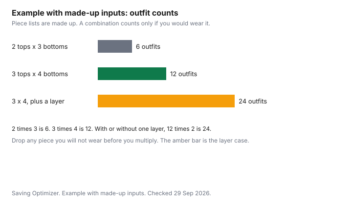

Clothing · Canada
A Business-Casual Work Wardrobe on a Budget: Mix-and-Match Rules for Canadian Offices
A business-casual wardrobe for a hybrid Canadian office can be small: count your office days and mix and match, since two tops and three bottoms give six outfits. A return-to-office note can feel like a bill for a new wardrobe. Hybrid work usually is not. If you are in the office two or three days a week, you need outfits for those days, plus laundry time, not a different jacket for every date on the calendar. This page is the arithmetic and the care. It is not a lookbook and not a brand list. Cost per wear for the pieces you keep is the wardrobe guide. The tax answer for ordinary clothes is short, and it is already written in the work-clothes guide.
Key takeaways
- Count office days, not a full-time closet. Two tops and three bottoms is six outfits. The chart's other counts are the same arithmetic on made-up piece lists.
- Spend attention on the pieces that show fit: trousers and a jacket. Save on the tee underneath. No prices, and no brand rank.
- Off-price and thrift work when you can try the piece on and return or re-donate a miss. Those rules live on the Winners and Value Village guides.
- A hem or a waist adjustment can make a thrift piece wearable. Mark's alterations do not earn CT Money.
- T4044 says employees cannot deduct most clothing, including special clothing they have to wear. Ordinary office clothes are personal. Not tax advice.
Hybrid work and the smaller wardrobe
Write down the office days in a normal week. Two days is two outfits if you do not repeat, or one outfit if you are willing to repeat and launder.
Three days with no repeat is three outfits, unless a layer changes the look enough that you count it as another. The mistake is buying a five-day closet for a two-day week, then feeling behind because the extra jackets do not get worn. Unworn clothes have an ugly cost per wear. The formula is on the cost-per-wear guide. The monthly cap that stops a "return to office" month from eating the grocery line is the household clothing budget.
Laundry sets the minimum. If you cannot wash between Tuesday and Thursday, you need a second shirt even when the office days are few. If you can, repeating a trouser is normal, not a failure. Hybrid work is a smaller wardrobe only when the pieces you own are the ones you will put on. A shirt you dislike does not count as coverage.
Core pieces and colours
Pick a short colour list so every top meets every bottom. Navy, grey, black, and one light shirt is a common Canadian office set.
It is a method, not a rule, and it is not a uniform unless your employer says so. Add one colour you enjoy if it still meets the bottoms. A print that only matches one skirt is one outfit, not a wardrobe. The multiplication is the point of the table. Two tops and three bottoms are six outfits. Three and four are twelve. Those counts assume you would actually wear every pair. If you would not, strike the piece before you multiply.
The layer is a cardigan, a blazer, or a lighter jacket you can take off in a warm meeting room. One layer that works on every combination does more than a second blazer in a colour you already own. Cold-building offices in winter are a layer problem, not a reason to buy a new coat. The coat, if you need one for the sidewalk, is the coat guide.
| Pieces | How the count works | Outfits |
|---|---|---|
| 2 tops, 3 bottoms | 2 times 3 | 6 |
| 3 tops, 4 bottoms | 3 times 4 | 12 |
| 3 tops, 4 bottoms, 1 optional layer | 3 times 4, with the layer or without it | 24 |
| Same list, one top you will not wear | Drop it before you multiply. 2 times 4, layer optional | 16, not 24 |
Off-price and thrift sources
Office clothes show up at off-price stores and at thrift. The risk is the same as any other garment: a compare-at tag that was never the price, and a seam you did not pull.
The Winners and Marshalls guide is the off-price check. The Value Village guide is the used check. Outlet malls, including made-for-outlet lines, are the outlet guide. None of those pages ranks a store, and this one does not either.
Try the piece on. Sit down in the trousers. Lift your arms in the jacket. A thrift blazer that fits the shoulders and needs a hem is a candidate. One that bites at the shoulders is not, because that alteration is a reconstruction. Under-layers, the plain tee or shirt, can be new basics. That test is the basics guide.
Tailoring for fit
Pay for the small changes that make a good piece wearable: a hem, a waist taken in on trousers that otherwise fit, a button that is loose. Do not pay to rebuild shoulders on a jacket that does not fit, or to resize a shirt by more than a small amount. This page does not cite a tailor's price. Get two quotes if the piece was expensive used, and walk away if the quote is close to a new piece that already fits.
If the alteration is at Mark's, the Triangle partners page, checked 29 Sep 2026, excludes alterations and embroidery from qualifying purchases. Do not expect CT Money on the tailor ticket. The earn rules are the Mark's guide. For a custom-made suit, the Competition Bureau's textile page says fibre content and dealer identity may be on the invoice instead of a sewn-in label, as long as labelled samples are there to examine before you buy. Read the invoice. You still want the fibre, especially if the care line says dry-clean only.
| Piece | Spend attention | Save attention |
|---|---|---|
| Trousers | Fit at the waist and thigh. A hem if the length is the only fault | A second colour that matches nothing else you own |
| Jacket or blazer | Shoulders. If those are wrong, do not buy it to alter | A fashion detail you will not wear on an office day |
| Shirt or blouse | A care label you will follow, and a colour in the set | Dry-clean only, unless you already pay for that |
| Under-layer tee | Seams and fibre, using the basics checklist | Brand names. This page does not rank them |
Care to reduce dry cleaning
Dry cleaning is a per-wear cost. A blazer cleaned after every office day will outrun a careful machine-wash shirt on cost per wear even when the blazer was the "good" buy.
Read the care label. If it allows washing, wash it. If it says dry-clean, spot-clean and air it between wears, and clean it when it is actually soiled. The habits are the garment-care guide. This page does not cite a cleaner’s price.
Do not confuse that household choice with the employer rule. T4130 says amounts an employer pays to launder or dry-clean a distinctive uniform or protective clothing are not a taxable benefit, including a reasonable allowance or a reimbursement with a receipt. A business-casual blazer you can wear on Saturday is not that uniform. T4044 says employees cannot deduct most clothing, and cannot deduct special clothing they have to wear for work. The office expectation does not, on that text, create a deduction. Not tax advice. Confirm with the CRA or a tax professional.

Sources & date stamps
- Canada Revenue Agency, Guide T4044, Employment Expenses 2025, checked 29 Sep 2026. Most clothing is a personal expense. You cannot deduct special clothing you have to wear for your work.
- Canada Revenue Agency, T4130, uniforms and protective clothing, checked 29 Sep 2026. Employer-paid laundry of a distinctive uniform or protective clothing is not a taxable benefit on that section. A weekend blazer is not that case.
- Triangle partners page, checked 29 Sep 2026. Mark's alterations and embroidery are excluded from qualifying purchases.
- Competition Bureau, textile labelling nutshell, date modified 2022-01-19, checked 29 Sep 2026. Custom-made suits may show fibre content on the invoice when samples are available to examine.
Frequently asked questions
How do I build a business-casual wardrobe on a budget?
Start with the days you are actually in the office. List a few tops and bottoms that all work with each other, in colours you will repeat. Add one layer for a cold building. Buy the gaps, not a second version of a shirt you already own. Use off-price and thrift for pieces you can try on. The outfit counts on this page are arithmetic. They are not a dress code.
How many pieces do I need?
Enough to cover your office days plus a laundry gap. Two tops and three bottoms make six combinations. Three tops and four bottoms make twelve. Add one optional layer and the second count doubles to twenty-four, because each outfit can be worn with or without it. Those are made-up piece counts in the chart, so you can see the multiplication. If two shirts are the same outfit in your mind, do not count them as two.
What should I spend more on?
The pieces where fit is visible and alterations are limited: trousers that sit properly, and a jacket if your office wears one. Spend less on the tee or shirt that sits underneath and gets washed every week. The table says spend or save by the kind of piece. It does not give prices. A store brand tee can be the right spend-less piece. The basics guide is that test.
Can I deduct work clothes?
Guide T4044 says you cannot deduct most tools and clothing, and that those costs are personal. It also says you cannot deduct special clothing you have to wear for your work. A business-casual shirt your office expects is the kind of cost that text is about. Confirm with the CRA or a tax professional before you put clothing on Form T777. Not tax advice. The longer reading is the work-clothes guide.
How do I make office clothes last?
Wash what the care label allows, and keep dry cleaning for the pieces that actually need it. A distinctive uniform an employer pays to clean is a T4130 question, not a reason to dry-clean a blazer you wear on the weekend. Follow the garment-care guide for water temperature and drying. Repair a loose button before the shirt leaves the rotation.
Researched and drafted with AI assistance and fact-checked against official Canadian sources. How we create content.
Disclosure: Discounted retailer gift cards are an offer type. Saving Optimizer may earn a commission if a partner link is added later. No gift-card partnership is claimed. A gift card does not change a tag, a return window, or a points rule. Education only. Not tax advice.